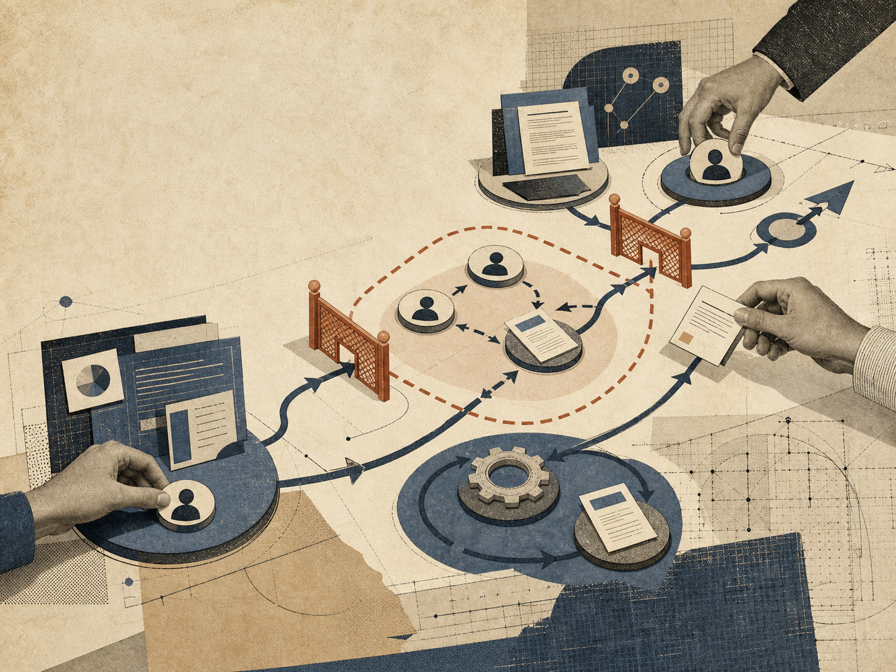
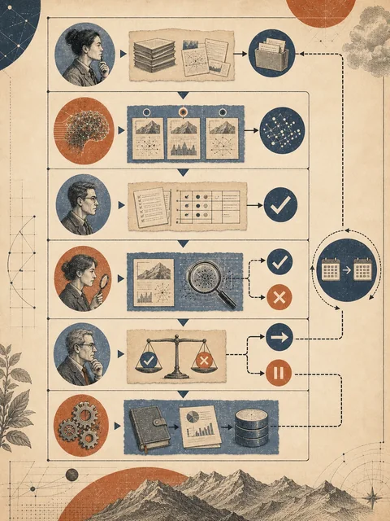
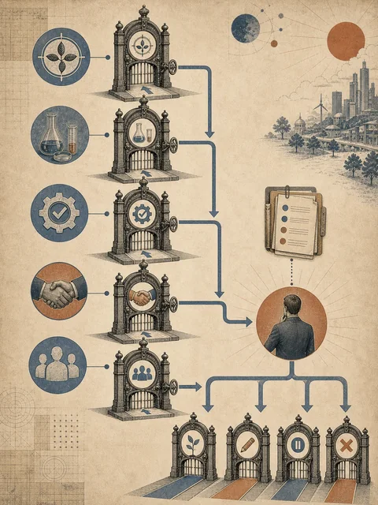

新用户
助教需要转写，教师需要笔记草稿，负责人需要授权记录

把 lecture-notes 做成可采用、可维护、可退出的试点
 VER. 2608.1
Built with impress.js
VER. 2608.1
Built with impress.js
本节结束时，你能写出一页组织方案，并说明试点何时采用或退出
“我已经能整理一段课堂录音，所有课程直接照用吧”
助教需要转写，教师需要笔记草稿，负责人需要授权记录
录音授权、说话人隐私、课程资料版权和存储权限出现
谁维护术语与测试，谁批准学生访问，谁能停止处理
组织应用不是把个人提示词复制给更多人
应用方案要从组织的真实工作和责任开始
多人协作会把原来由一个人隐含承担的工作拆成交接、授权和维护节点
原始录音 → 带时间转写 → 笔记草稿 → 教师修订；每次交接写接收者和完成标准
存储者可保存授权录音，助教可改转写，教师可改笔记；负责人批准前学生不能访问
维护者更新术语表、说话人规则和测试；课程、工具或人员变化时触发复测
小范围让价值、风险和新增工作都能被观察
减少一类重复等待或遗漏
一个团队、一个节点或一个时间窗口
保留中间产物、检查点和试点记录
1 门课 × 2 周；每周 1 段已授权录音；笔记只供教师与助教复核
授权记录、原始录音、Slides 与术语表；保存时间位置、不可辨认段和版本
生成带时间转写和结构化笔记，保留 speaker: unknown；不猜测、不发布
助教抽听，教师修订，负责人批准访问；维护者更新术语、规则和测试

试点能否继续，取决于价值、质量、负担和责任
| 观察面 | 试点要问 | 记录什么 | 未达到时 |
|---|---|---|---|
| 价值 | 是否减少转写和整理等待 | 完成时间、等待次数、返工次数 | 缩小范围或暂停 |
| 质量 | 笔记能否回到录音位置 | 术语修订、不可辨认段、说话人状态 | 回到转写或整理 |
| 新增负担 | 教师复核和失败处理可承受？ | 复核用时、培训次数、工具费、维护记录 | 减少自动化或回人工 |
| 采用责任 | 教师能修订并控制访问？ | 教师修改、负责人签收、授权记录 | 指定责任人或暂停 |
省时必须和新增成本、证据质量一起看
没有退出条件的试点很容易变成不可逆依赖

不是写产品介绍，而是让同伴能照着画、检查和暂停
使用者、重复摩擦和完成标准；写出一个可观察的结果
角色、节点、交接、工具和检查点；每次交接写产物和接收者
权限、隐私、版权、成本和责任；写出不能进入工具的内容及批准者
范围、样例、指标、反馈、维护和退出；每一项都写“判据—动作—责任人”
读者最后应该能回答：谁在什么条件下，把什么产物交给谁；失败时谁按哪个条件停
试点不是为了证明方案一定成功，而是让组织依据证据作出下一步选择
variant: relation 试点证据 + 责任人 + 退出线 → 采用、修改、暂停或退出
价值和风险在范围内；责任人记录决定并进入日常
保留目标，缩范围、加检查或调分工；用同一指标复测
证据不足、成本过高或风险升高 → 冻结新使用，回人工并留因
停止使用 → 撤回权限、归档记录，明确日常接手人
试点允许采用、修改、暂停或退出，而不是只允许成功
组织应用要把个人流程放进角色、权限、成本和维护关系中
谁受益，当前摩擦是什么，范围多大
节点、交接、检查、工具和责任
小范围、可测量；每个结果都有判据、动作和责任人
更新 Skill、测试、权限和退出条件
组织采用的不是一个工具，而是一套能够承担责任的工作安排